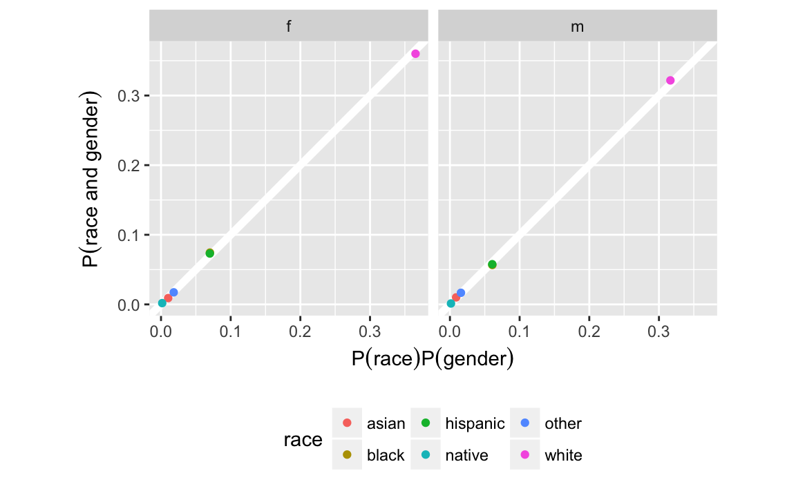
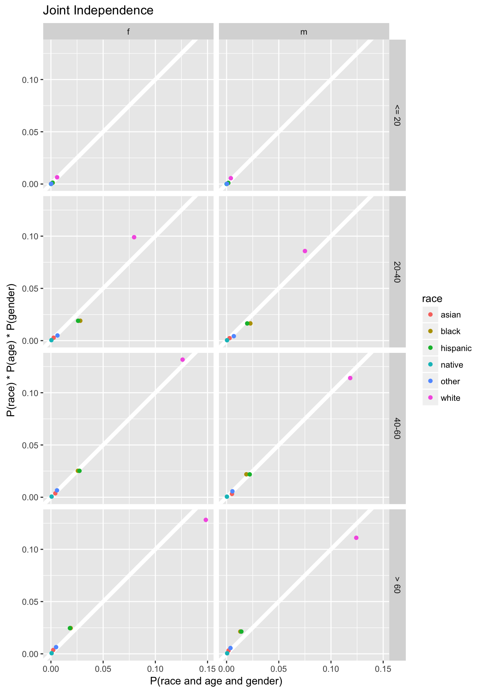
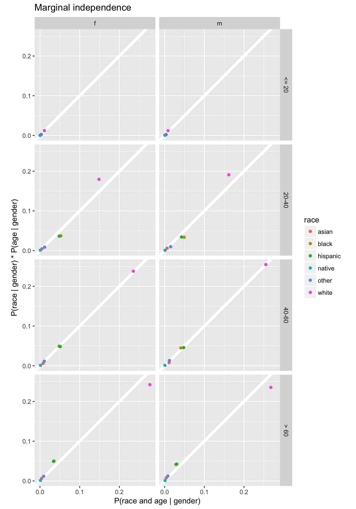
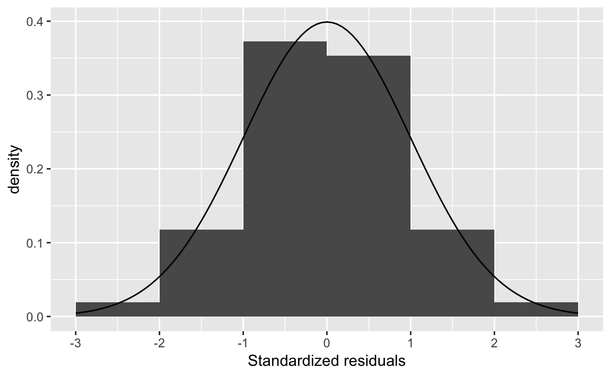
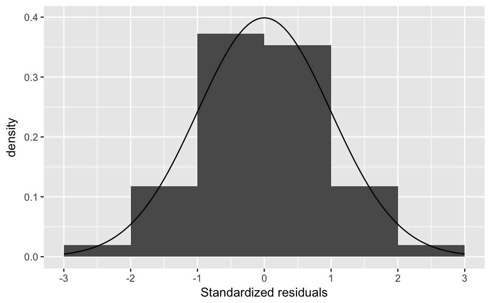
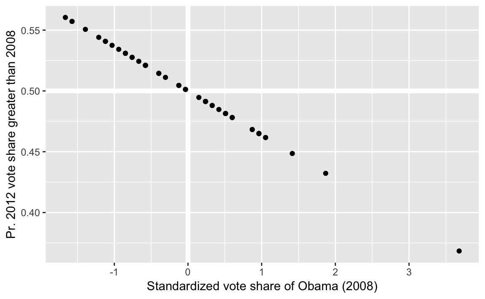
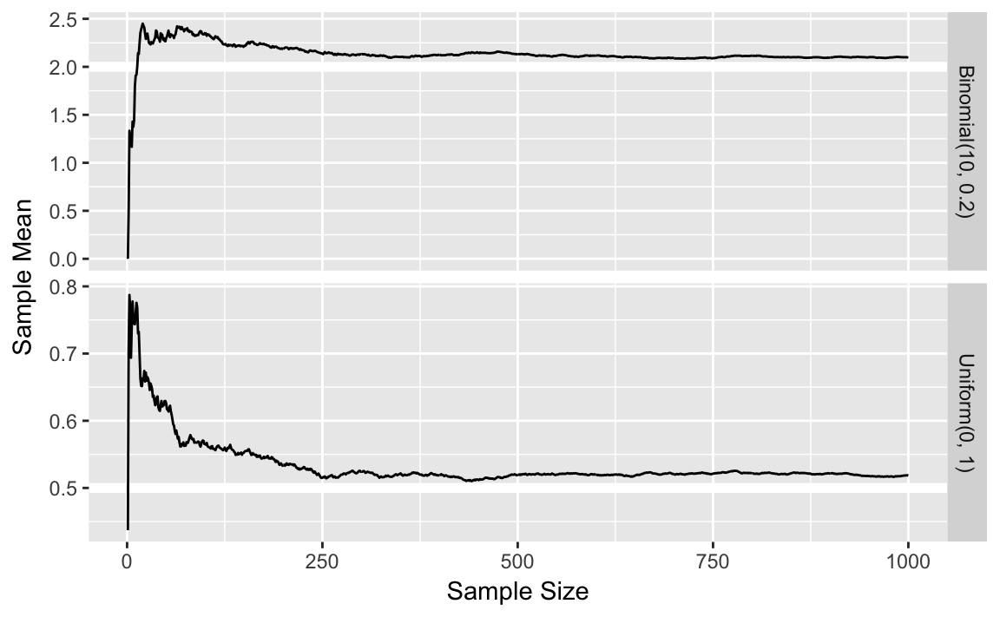
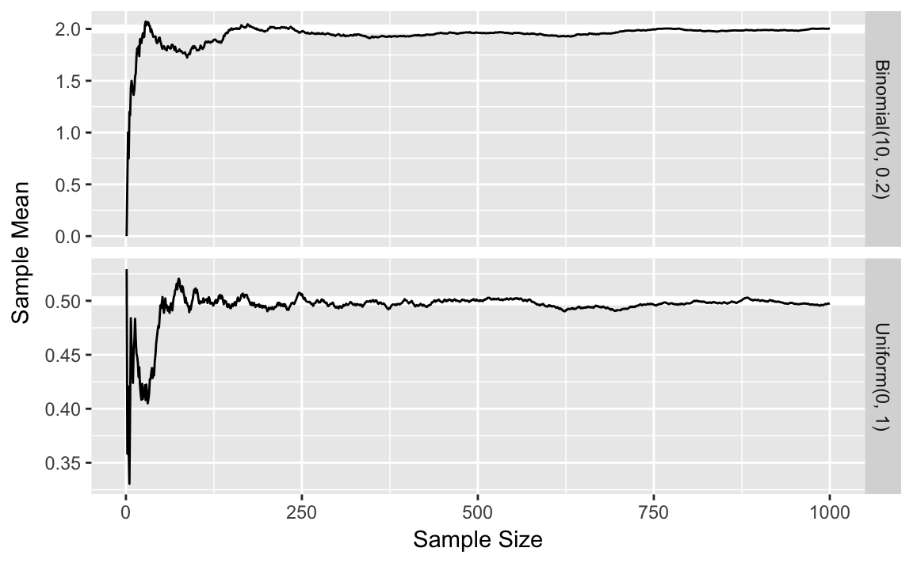
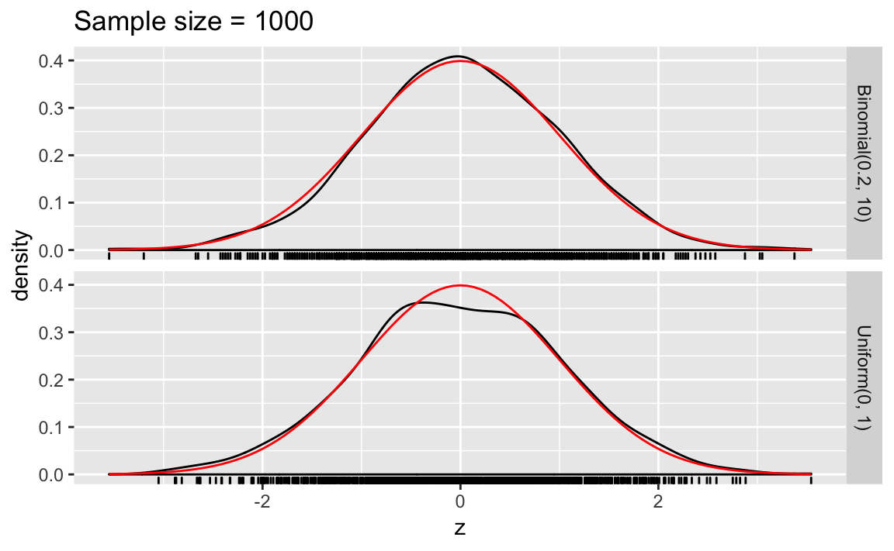
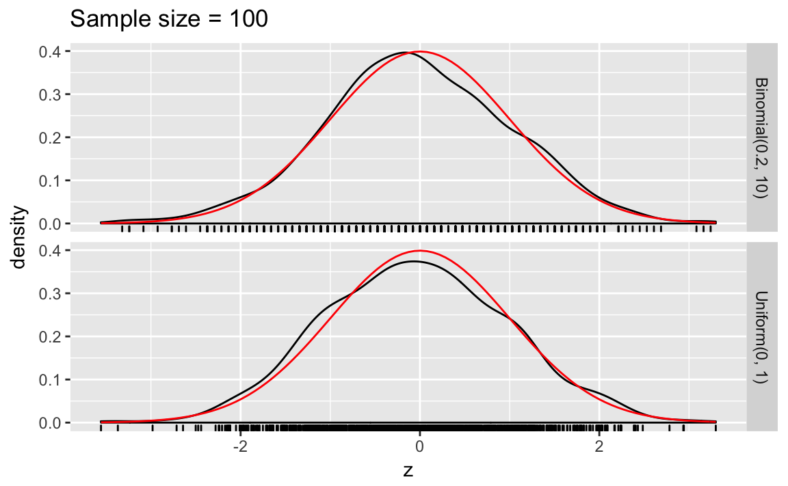

6 Probability
Prerequisites
library("tidyverse")
library("forcats")
library("stringr")
library("broom")6.1 Probability
6.1.1 Frequentist vs. Bayesian
6.1.2 Definition and Axioms
6.1.3 Permutations
birthday <- function(k) {
logdenom <- k * log(365) + lfactorial(365 - k)
lognumer <- lfactorial(365)
pr <- 1 - exp(lognumer - logdenom)
pr
}
bday <- tibble(k = 1:50, pr = birthday(k))
ggplot(bday, aes(x = k, y = pr)) +
geom_hline(yintercept = 0.5, colour = "white", size = 2) +
geom_line() +
geom_point() +
scale_y_continuous(str_c("Probability that at least two",
"people have the same birthday", sep = "\n"),
limits = c(0, 1), breaks = seq(0, 1, by = 0.1)) +
labs(x = "Number of people")
Note: The logarithm is used for numerical stability. Basically, “floating-point” numbers are approximations of numbers. If you perform arithmetic with numbers that are very large, very small, or vary differently in magnitudes, you could have problems. Logarithms help with some of those issues. See “Falling Into the Floating Point Trap” in The R Inferno for a summary of floating point numbers. See these John Fox posts 1 2 for an example of numerical stability gone wrong. Also see this article on the log sum of exponentials.
6.1.4 Sampling without replacement
Instead of using a for loop, we could do the simulations using a functional as described in R for Data Science chapter “Iterations”.
Define the function sim_bdays which randomly samples k birthdays, and returns TRUE if there are any duplicate birthdays, and FALSE if there are none.
sim_bdays <- function(k) {
days <- sample(1:365, k, replace = TRUE)
length(unique(days)) < k
}We can test the code for k = 10 birthdays.
sim_bdays(10)
#> [1] FALSESince the function is randomly sampling birthdays, running it multiple times will produce different answers.
One helpful feature of a functional style of writing code vs. a for loop is that the function encapsulates the code and allows you to test that it works for different inputs before repeating it for many inputs. It is more difficult to debug functions that produce random outputs, but some sanity checks are that the function:
- returns a logical vector of length one (
TRUEorFALSE) - always returns
FALSEwhenk = 1since there can never be a duplicates with one person - always returns
TRUEwhenk > 365by the pidgeonhole principle.
sim_bdays(1)
#> [1] FALSE
sim_bdays(366)
#> [1] TRUESet the parameters for 1,000 simulations, and 23 individuals. We use map_lgl since sim_bdays returns a logical value (TRUE, FALSE):
sims <- 1000
k <- 23
map_lgl(seq_len(sims), ~ sim_bdays(k)) %>%
mean()
#> [1] 0.489An alternative way of running this is using the rerun and using flatten to turn the output to a numeric vector:
rerun(sims, sim_bdays(k)) %>%
flatten_dbl() %>%
mean()
#> [1] 0.4776.1.5 Combinations
The function for \(84\choose{6}\) is:
choose(84, 6)
#> [1] 4.06e+08However, due to the the larges values that the binomial coefficient, it is almost always better to use the log of the binomial coefficient, \(\log{84\choose{6}}\),
lchoose(84, 6)
#> [1] 19.86.2 Conditional Probability
6.2.1 Conditional, Marginal, and Joint Probabilities
Load Florida voting data from the qss package:
data(FLVoters, package = "qss")
dim(FLVoters)
#> [1] 10000 6
glimpse(FLVoters)
#> Observations: 10,000
#> Variables: 6
#> $ surname <chr> "PIEDRA", "LYNCH", "CHESTER", "LATHROP", "HUMMEL", "CH...
#> $ county <int> 115, 115, 115, 115, 115, 115, 115, 115, 1, 1, 115, 115...
#> $ VTD <int> 66, 13, 103, 80, 8, 55, 84, 48, 41, 39, 26, 45, 11, 48...
#> $ age <int> 58, 51, 63, 54, 77, 49, 77, 34, 56, 60, 44, 45, 80, 83...
#> $ gender <chr> "f", "m", "m", "m", "f", "m", "f", "f", "f", "m", "m",...
#> $ race <chr> "white", "white", NA, "white", "white", "white", "whit...
FLVoters <- FLVoters %>%
na.omit()
dim(FLVoters)
#> [1] 9113 6Note the difference between glimpse() and dim(). What is different in how they handle NA observations?
Instead of using prop.base, we calculate the probabilities with a data frame. Calculate the marginal probabilities of each race:
margin_race <-
FLVoters %>%
count(race) %>%
mutate(prop = n / sum(n))
margin_race
#> # A tibble: 6 x 3
#> race n prop
#> <chr> <int> <dbl>
#> 1 asian 175 0.0192
#> 2 black 1194 0.131
#> 3 hispanic 1192 0.131
#> 4 native 29 0.00318
#> 5 other 310 0.0340
#> 6 white 6213 0.682Calculate the marginal probabilities of each gender:
margin_gender <-
FLVoters %>%
count(gender) %>%
mutate(prop = n / sum(n))
margin_gender
#> # A tibble: 2 x 3
#> gender n prop
#> <chr> <int> <dbl>
#> 1 f 4883 0.536
#> 2 m 4230 0.464FLVoters %>%
filter(gender == "f") %>%
count(race) %>%
mutate(prop = n / sum(n))
#> # A tibble: 6 x 3
#> race n prop
#> <chr> <int> <dbl>
#> 1 asian 83 0.0170
#> 2 black 678 0.139
#> 3 hispanic 666 0.136
#> 4 native 17 0.00348
#> 5 other 158 0.0324
#> 6 white 3281 0.672joint_p <-
FLVoters %>%
count(gender, race) %>%
mutate(prop = n / sum(n))
joint_p
#> # A tibble: 12 x 4
#> gender race n prop
#> <chr> <chr> <int> <dbl>
#> 1 f asian 83 0.00911
#> 2 f black 678 0.0744
#> 3 f hispanic 666 0.0731
#> 4 f native 17 0.00187
#> 5 f other 158 0.0173
#> 6 f white 3281 0.360
#> # ... with 6 more rowsWe can convert the data frame to have gender as columns:
joint_p %>%
select(-n) %>%
spread(gender, prop)
#> # A tibble: 6 x 3
#> race f m
#> <chr> <dbl> <dbl>
#> 1 asian 0.00911 0.0101
#> 2 black 0.0744 0.0566
#> 3 hispanic 0.0731 0.0577
#> 4 native 0.00187 0.00132
#> 5 other 0.0173 0.0167
#> 6 white 0.360 0.322Sum over race:
joint_p %>%
group_by(race) %>%
summarise(prop = sum(prop))
#> # A tibble: 6 x 2
#> race prop
#> <chr> <dbl>
#> 1 asian 0.0192
#> 2 black 0.131
#> 3 hispanic 0.131
#> 4 native 0.00318
#> 5 other 0.0340
#> 6 white 0.682Sum over gender:
joint_p %>%
group_by(gender) %>%
summarise(prop = sum(prop))
#> # A tibble: 2 x 2
#> gender prop
#> <chr> <dbl>
#> 1 f 0.536
#> 2 m 0.464FLVoters <-
FLVoters %>%
mutate(age_group = cut(age, c(0, 20, 40, 60, Inf), right = TRUE,
labels = c("<= 20", "20-40", "40-60", "> 60")))joint3 <-
FLVoters %>%
count(race, age_group, gender) %>%
ungroup() %>%
mutate(prop = n / sum(n))
joint3
#> # A tibble: 47 x 5
#> race age_group gender n prop
#> <chr> <fct> <chr> <int> <dbl>
#> 1 asian <= 20 f 1 0.000110
#> 2 asian <= 20 m 2 0.000219
#> 3 asian 20-40 f 24 0.00263
#> 4 asian 20-40 m 26 0.00285
#> 5 asian 40-60 f 38 0.00417
#> 6 asian 40-60 m 47 0.00516
#> # ... with 41 more rowsMarginal probabilities by age groups
margin_age <-
FLVoters %>%
count(age_group) %>%
mutate(prop = n / sum(n))
margin_age
#> # A tibble: 4 x 3
#> age_group n prop
#> <fct> <int> <dbl>
#> 1 <= 20 161 0.0177
#> 2 20-40 2469 0.271
#> 3 40-60 3285 0.360
#> 4 > 60 3198 0.351Calculate the probabilities that each group is in a given age group, and show \(P(\text{black} \land \text{female} \land \text{age} > 60)\): (Note: the symbol \(\land\) is the logical symbol for ‘and’, implying the joint probability.)
left_join(joint3,
select(margin_age, age_group, margin_age = prop),
by = "age_group") %>%
mutate(prob_age_group = prop / margin_age) %>%
filter(race == "black", gender == "f", age_group == "> 60") %>%
select(race, age_group, gender, prob_age_group)
#> # A tibble: 1 x 4
#> race age_group gender prob_age_group
#> <chr> <fct> <chr> <dbl>
#> 1 black > 60 f 0.0538Two-way joint probability table for age group and gender
joint2 <- FLVoters %>%
count(age_group, gender) %>%
ungroup() %>%
mutate(prob_age_gender = n / sum(n))
joint2
#> # A tibble: 8 x 4
#> age_group gender n prob_age_gender
#> <fct> <chr> <int> <dbl>
#> 1 <= 20 f 88 0.00966
#> 2 <= 20 m 73 0.00801
#> 3 20-40 f 1304 0.143
#> 4 20-40 m 1165 0.128
#> 5 40-60 f 1730 0.190
#> 6 40-60 m 1555 0.171
#> # ... with 2 more rowsThe joint probability \(P(\text{age} > 60 \land \text{female})\),
joint2 %>%
filter(age_group == "> 60", gender == "f")
#> # A tibble: 1 x 4
#> age_group gender n prob_age_gender
#> <fct> <chr> <int> <dbl>
#> 1 > 60 f 1761 0.193The conditional probabilities \(P(\text{race } | \text{ gender, age})\),
condprob_race <-
left_join(joint3, select(joint2, -n), by = c("age_group", "gender")) %>%
mutate(prob_race = prop / prob_age_gender) %>%
arrange(age_group, gender) %>%
select(age_group, gender, race, prob_race)Each row is the \(P(\text{race } | \text{ age group} \land \text{gender})\), so \(P(\text{black } | \text{ female} \land \text{age} > 60)\),
filter(condprob_race, gender == "f", age_group == "> 60", race == "black")
#> # A tibble: 1 x 4
#> age_group gender race prob_race
#> <fct> <chr> <chr> <dbl>
#> 1 > 60 f black 0.09776.2.2 Independence
Create a table with the products of margins of race and age. Using the function crossing to create a tibble with all combinations of race and gender and the independent prob.
race_gender_indep <-
crossing(select(margin_race, race, prob_race = prop),
select(margin_gender, gender, prob_gender = prop)) %>%
mutate(prob_indep = prob_race * prob_gender) %>%
left_join(select(joint_p, gender, race, prob = prop),
by = c("gender", "race")) %>%
select(race, gender, everything())
race_gender_indep
#> # A tibble: 12 x 6
#> race gender prob_race prob_gender prob_indep prob
#> <chr> <chr> <dbl> <dbl> <dbl> <dbl>
#> 1 asian f 0.0192 0.536 0.0103 0.00911
#> 2 asian m 0.0192 0.464 0.00891 0.0101
#> 3 black f 0.131 0.536 0.0702 0.0744
#> 4 black m 0.131 0.464 0.0608 0.0566
#> 5 hispanic f 0.131 0.536 0.0701 0.0731
#> 6 hispanic m 0.131 0.464 0.0607 0.0577
#> # ... with 6 more rowsggplot(race_gender_indep,
aes(x = prob_indep, y = prob, colour = race)) +
geom_abline(intercept = 0, slope = 1, colour = "white", size = 2) +
geom_point() +
facet_grid(. ~ gender) +
coord_fixed() +
theme(legend.position = "bottom") +
labs(x = expression(P("race") * P("gender")),
y = expression(P("race and gender")))
While the original code only calculates joint-independence value for values of age > 60, and female, this calculates the joint probabilities for all combinations of the three variables, and facets by age and gender.
joint_indep <-
crossing(select(margin_race, race, prob_race = prop),
select(margin_age, age_group, prob_age = prop),
select(margin_gender, gender, prob_gender = prop)) %>%
mutate(indep_prob = prob_race * prob_age * prob_gender) %>%
left_join(select(joint3, race, age_group, gender, prob = prop),
by = c("gender", "age_group", "race")) %>%
replace_na(list(prob = 0))
ggplot(joint_indep, aes(x = prob, y = indep_prob, colour = race)) +
geom_abline(intercept = 0, slope = 1, colour = "white", size = 2) +
geom_point() +
facet_grid(age_group ~ gender) +
coord_fixed() +
labs(x = "P(race and age and gender)",
y = "P(race) * P(age) * P(gender)",
title = "Joint Independence")
While code in QSS only calculates the conditional independence given female, the following code calculates conditional independence for all values of gender:
cond_gender <-
left_join(select(joint3, race, age_group, gender, joint_prob = prop),
select(margin_gender, gender, prob_gender = prop),
by = c("gender")) %>%
mutate(cond_prob = joint_prob / prob_gender)Calculate the conditional distribution \(\Pr(\text{race} | \text{gender})\):
prob_race_gender <-
left_join(select(joint_p, race, gender, prob_race_gender = prop),
select(margin_gender, gender, prob_gender = prop),
by = "gender") %>%
mutate(prob_race = prob_race_gender / prob_gender)Calculate the conditional distribution \(\Pr(\text{age} | \text{gender})\):
prob_age_gender <-
left_join(select(joint2, age_group, gender, prob_age_gender),
select(margin_gender, gender, prob_gender = prop),
by = "gender") %>%
mutate(prob_age = prob_age_gender / prob_gender)
# indep prob of race and age
indep_cond_gender <-
full_join(select(prob_race_gender, race, gender, prob_race),
select(prob_age_gender, age_group, gender, prob_age),
by = "gender") %>%
mutate(indep_prob = prob_race * prob_age)
inner_join(select(indep_cond_gender, race, age_group, gender, indep_prob),
select(cond_gender, race, age_group, gender, cond_prob),
by = c("gender", "age_group", "race")) %>%
ggplot(aes(x = cond_prob, y = indep_prob, colour = race)) +
geom_abline(intercept = 0, slope = 1, colour = "white", size = 2) +
geom_point() +
facet_grid(age_group ~ gender) +
coord_fixed() +
labs(x = "P(race and age | gender)",
y = "P(race | gender) * P(age | gender)",
title = "Marginal independence")
6.2.2.1 Monty-hall problem
The for loop approach in QSS is valid code, but here we provide a more functional approach to solving the problem. We will define a function to choose a door, repeat the function multiple times while storing the results in a data frame, and then summarize that data frame.
First, create a function for a single iteration. This returns a single logical value:
choose_door <- function(.iter) {
# what's behind each door door:
# Why is it okay that this is fixed?
doors <- c("goat", "goat", "car")
# User randomly chooses a door
first <- sample(1:3, 1)
# randomly choose the door that Monty Hall reveals
remain <- doors[-first]
monty <- sample( (1:2)[remain == "goat"], size = 1)
# did the contestant win?
tibble(.iter = .iter,
result = remain[-monty] == "car")
}Now use map_df to run choose_door multiple times, and then summarize the results:
sims <- 1000
map_df(seq_len(sims), choose_door) %>%
summarise(win_pct = mean(result))
#> # A tibble: 1 x 1
#> win_pct
#> <dbl>
#> 1 0.6486.2.3 Bayes’ Rule
6.2.4 Predicting Race Using Surname and Residence Location
Start with the Census names files:
data("cnames", package = "qss")
glimpse(cnames)
#> Observations: 151,671
#> Variables: 7
#> $ surname <chr> "SMITH", "JOHNSON", "WILLIAMS", "BROWN", "JONES", ...
#> $ count <int> 2376206, 1857160, 1534042, 1380145, 1362755, 11278...
#> $ pctwhite <dbl> 73.34, 61.55, 48.52, 60.72, 57.69, 85.80, 64.73, 6...
#> $ pctblack <dbl> 22.22, 33.80, 46.72, 34.54, 37.73, 10.41, 30.77, 0...
#> $ pctapi <dbl> 0.40, 0.42, 0.37, 0.41, 0.35, 0.42, 0.40, 1.43, 0....
#> $ pcthispanic <dbl> 1.56, 1.50, 1.60, 1.64, 1.44, 1.43, 1.58, 90.82, 9...
#> $ pctothers <dbl> 2.48, 2.73, 2.79, 2.69, 2.79, 1.94, 2.52, 1.09, 0....For each surname, cnames contains variables with the probability that it belongs to an individual of a given race (pctwhite, pctblack, …). We want to find the most-likely race for a given surname, by finding the race with the maximum proportion. Instead of dealing with multiple variables, it is easier to use max on a single variable, so we will rearrange the data to in order to use a grouped summarize, and then merge the new variable back to the original data sets. We will also remove the ‘pct’ prefix from each of the variable names.
Calculate the most likely race for each name:
most_likely_race <-
cnames %>%
select(-count) %>%
gather(race_pred, pct, -surname) %>%
# remove pct_ prefix from variable names
mutate(race_pred = str_replace(race_pred, "^pct", "")) %>%
# # group by surname
group_by(surname) %>%
# select obs with the largest percentage
filter(row_number(desc(pct)) == 1L) %>%
# Ungroup to avoid errors later
ungroup %>%
# # don't need pct anymore
select(-pct) %>%
mutate(race_pred = recode(race_pred, asian = "api", other = "others"))Merge the data frame with the most likely race for each surname to the the original cnames data frame:
cnames <-
cnames %>%
left_join(most_likely_race, by = "surname")Instead of using match, use inner_join to merge the surnames to FLVoters:
FLVoters <-
FLVoters %>%
inner_join(cnames, by = "surname")
dim(FLVoters)
#> [1] 8022 14FLVoters also includes a “native” category that the surname dataset does not.
FLVoters <-
FLVoters %>%
mutate(race2 = fct_recode(race, other = "native"))Check that the levels of race and race_pred are the same:
FLVoters %>%
count(race2)
#> # A tibble: 5 x 2
#> race2 n
#> <fct> <int>
#> 1 asian 140
#> 2 black 1078
#> 3 hispanic 1023
#> 4 other 277
#> 5 white 5504
FLVoters %>%
count(race_pred)
#> # A tibble: 5 x 2
#> race_pred n
#> <chr> <int>
#> 1 api 120
#> 2 black 258
#> 3 hispanic 1121
#> 4 others 7
#> 5 white 6516Now we can calculate True positive rate for all races
FLVoters %>%
group_by(race2) %>%
summarise(tp = mean(race2 == race_pred)) %>%
arrange(desc(tp))
#> # A tibble: 5 x 2
#> race2 tp
#> <fct> <dbl>
#> 1 white 0.950
#> 2 hispanic 0.847
#> 3 black 0.160
#> 4 asian 0
#> 5 other 0and the False discovery rate for all races,
FLVoters %>%
group_by(race_pred) %>%
summarise(fp = mean(race2 != race_pred)) %>%
arrange(desc(fp))
#> # A tibble: 5 x 2
#> race_pred fp
#> <chr> <dbl>
#> 1 api 1
#> 2 others 1
#> 3 black 0.329
#> 4 hispanic 0.227
#> 5 white 0.197Now add residence data using the FLCensus data included in the
data("FLCensus", package = "qss")\(P(\text{race})\) in Florida:
race.prop <-
FLCensus %>%
select(total.pop, white, black, api, hispanic, others) %>%
gather(race, pct, -total.pop) %>%
group_by(race) %>%
summarise(mean = weighted.mean(pct, weights = total.pop)) %>%
arrange(desc(mean))
race.prop
#> # A tibble: 5 x 2
#> race mean
#> <chr> <dbl>
#> 1 white 0.605
#> 2 hispanic 0.213
#> 3 black 0.139
#> 4 api 0.0219
#> 5 others 0.02146.2.5 Predicting Election Outcomes with Uncertainty
Load the pres08 data from the qss package.
data("pres08", package = "qss")Add a column p which contains Obama’s vote share of the major parties:
pres08 <- pres08 %>%
mutate(p = Obama / (Obama + McCain))Write a function to simulate the elections. df is the data frame (pres08) with the state, EV, and p columns. n_draws is the size of the binomial distribution to draw from. .id is the simulation number.
sim_election <- function(.id, df, n_draws = 1000) {
# For each state randomly sample
mutate(df,
draws = rbinom(n(), n_draws, p)) %>%
filter(draws > (n_draws / 2)) %>%
summarise(EV = sum(EV),
.id = .id)
}Now simulate the election 10,000 times:
sims <- 10000
sim_results <- map_df(seq_len(sims), ~ sim_election(.x, pres08, n_draws = 1000))In the 2008 election, Obama received 364 electoral votes
ELECTION_EV <- 364And plot them,
ggplot(sim_results, aes(x = EV, y = ..density..)) +
geom_histogram(binwidth = 10, fill = "gray30") +
geom_vline(xintercept = ELECTION_EV, colour = "black", size = 2) +
labs(x = "Electoral Votes", y = "density")Simulation mean, variance, and standard deviations:
sim_results %>%
select(EV) %>%
summarise_all(funs(mean, var, sd))
#> mean var sd
#> 1 352 269 16.4Theoretical probabilities from a binomial distribution:
# we cannot use n, because mutate will look for n() first.
n_draws <- 1000
pres08 %>%
mutate(pb = pbinom(n_draws / 2, size = n_draws, prob = p,
lower.tail = FALSE)) %>%
summarise(mean = sum(pb * EV),
V = sum(pb * (1 - pb) * EV ^ 2),
sd = sqrt(V))
#> mean V sd
#> 1 352 269 16.46.3 Random Variables and Probability Distributions
6.3.1 Bernoulli and Uniform Distributions
Uniform distribution functions:
dunif(0.5, min = 0, max = 1)
#> [1] 1
punif(1, min = -2, max = 2)
#> [1] 0.75Sample from a uniform distribution, and convert to a probability:
sims <- 1000
p <- 0.5A Bernoulli distribution is a discrete distribution which randomly samples from 0 and 1. A random variable \(X\) with a Bernoulli distribution with probability parameter \(p\) has the distribution, \[ \begin{aligned} P(X = 1 | p) &= p \\ P(X = 0 | p) &= 1 - p \end{aligned} \]
R does not have a rbernoulli for the Bernoulli distribution (because as we will see it is a special case of the Binomial distribution, and there are several other ways to sample from it): Here are three ways to sample from a Bernoulli distribution.
First, we can use the sample from values c(0, 1) with replacement. By default it will set sample 0 and 1 with equal probability (\(p = 0.5\)), but using the prob argument we can sample 0 and 1 with difference probabilities. Take 50 samples from a Bernoulli distribution with p = 0.6,
p <- 0.6
n <- 100
y <- sample(c(0, 1), n, prob = c(1 - p, p), replace = TRUE)
head(y)
#> [1] 1 0 1 1 1 1
mean(y)
#> [1] 0.57A second method to sample \(n\) values from a Bernoulli distribution that has a probability parameter \(p\) is,
- Take a sample of \(n\) values from a uniform distribution. Call this vector \(x\).
- To generate a sample \(y\) taking values of 0 and 1 from this vector \(x\), set \(y_i = 1\) if \(x_i >= p\), and \(y_i = 0\) if \(x_i < p\).
Note how this method works. Given a value \(p\) between 0 and 1, in a sample from Uniform distribution, in expectation a fraction of \(p\) values will be less than \(p\), and in expectation a fraction of \(1 - p\) values will be greater than \(p\). These are exactly the probabilities of sampling 1 and 0 in the probability mass of the Uniform distribution: {r} y <- as.integer(runif(n, min = 0, max = 1) <= p) head(y) mean(y)ß
Third, note that the Bernoulli distribution is a special case of the binomial distribution (discussed in the next section), where \(size = 1\). Thus, we can use the rbinom function to sample from a binomial distribution.
y <- rbinom(n, size = 1, prob = p)
head(y)
#> [1] 1 1 1 0 1 1
mean(y)
#> [1] 0.64Since the R functions for the Binomial distribution don’t exist here are examples of how you would write them as examples of writing functions to sample and calculate the PDF or PMF, CDF, and quantile functions of a distribution. Sample from the distribution:
rbernoulli <- function(n, prob = 0.5) {
sample(c(1L, 0L), n, replace = FALSE, prob = c(prob, 1 - prob))
}Probability mass function (PMF):
dbernoulli <- function(x, prob = 0.5) {
d <- rep(NA_real_, length(x))
d[x == 1] <- prob
d[x == 0] <- 1 - prob
d
}Cumulative density function (CDF): \[ P(X \leq x|p) = \begin{cases} 0 & \text{if } x < 0 , \\ 1 - p & \text{if } 0 \leq x < 1 ,\\ 1 & \text{if } x \geq 1 . \end{cases} \]
pbernoulli <- function(q, prob = 0.5) {
p <- rep(NA_real_, length(q))
p[q < 0] <- 0
p[q >= 0 & q < 1] <- 1 - prob
p[q >= 1] <- 1
p
}The inverse cumulative density function or quantile function, \[ q = \begin{cases} \emptyset & \text{if } x \leq 1 - p, \\ 0 & \text{if } 1 - p \leq x < 1 ,\\ 1 & \text{if } x \geq 1 . \end{cases} \] where, \[ q \text{ such that } P(X \leq q|p) = x. \]
qbernoulli <- function(p, prob = 0.5) {
q <- rep(NA_integer_, length(p))
q[prob >= 1 - p & prob < 1] <- 0L
q[prob >= 1] <- 1L
q
}Alternatively, since the Bernoulli distribution is a special case of the Binomial distribution, write *bernoulli functions that wrap calls to to *binom functions for the special case where size = 1:
rbernoulli <- function(n, prob = 0.5, ...) {
rbinom(n, size = 1, prob = prob, ...)
}
pbernoulli <- function(q, prob = 0.5, ...) {
rbinom(q, size = 1, prob = prob, ...)
}
pbernoulli <- function(q, prob = 0.5, ...) {
rbinom(q, size = 1, prob = prob, ...)
}
dbernoulli <- function(x, prob = 0.5, ...) {
rbinom(x, size = 1, prob = prob, ...)
}6.3.2 Binomial distribution
dbinom(2, size = 3, prob = 0.5)
#> [1] 0.375
pbinom(1, 3, 0.5)
#> [1] 0.5voters <- c(1000, 10000, 100000)
dbinom(voters / 2, size = voters, prob = 0.5)
#> [1] 0.02523 0.00798 0.002526.3.3 Normal distribution
pnorm(1) - pnorm(-1)
#> [1] 0.683
pnorm(2) - pnorm(-2)
#> [1] 0.954Write a function to calculate the area of a normal distribution \(\pm \sigma\)
normal_pm_sigma <- function(x, mu = 0, sd = 1) {
(pnorm(mu + sd * x, mean = mu, sd = sd) -
pnorm(mu - sd * x, mean = mu, sd = sd))
}
normal_pm_sigma(1)
#> [1] 0.683
normal_pm_sigma(2)
#> [1] 0.954
normal_pm_sigma(1, mu = 5, sd = 2)
#> [1] 0.683
normal_pm_sigma(2, mu = 5, sd = 2)
#> [1] 0.954data("pres08", package = "qss")
data("pres12", package = "qss")To join both data frames
pres <-
full_join(select(pres08, state, Obama_2008 = Obama, McCain_2008 = McCain,
EV_2008 = EV),
select(pres12, state, Obama_2012 = Obama, Romney_2012 = Romney,
EV_2012 = EV),
by = "state") %>%
mutate(Obama_2008_z = as.numeric(scale(Obama_2008)),
Obama_2012_z = as.numeric(scale(Obama_2012)))fit1 <- lm(Obama_2012_z ~ -1 + Obama_2008_z, data = pres)Plot the residuals and compare them to a normal distribution:
err <- tibble(err = resid(fit1)) %>%
# z-score of residuals
mutate(err_std = err / sd(err))
ggplot(err, aes(x = err_std)) +
geom_histogram(mapping = aes(y = ..density..),
binwidth = 1, boundary = 0) +
stat_function(geom = "line", fun = dnorm) +
scale_x_continuous("Standardized residuals",
breaks = -3:3, limits = c(-3, 3))
ggplot(err, aes(sample = err_std)) +
geom_abline(intercept = 0, slope = 1, color = "white", size = 2) +
geom_qq() +
coord_fixed(ratio = 1) +
scale_y_continuous("Sample quantiles", limits = c(-3, 3)) +
scale_x_continuous("Theoretical quantiles", limits = c(-3, 3))
Alternatively, you can use the augment function from broom which returns the residuals for each observation in the .resid column.
augment(fit1) %>%
mutate(.resid_z = .resid / sd(.resid)) %>%
ggplot(aes(x = .resid_z)) +
geom_histogram(mapping = aes(y = ..density..),
binwidth = 1, boundary = 0) +
stat_function(geom = "line", fun = dnorm) +
scale_x_continuous("Standardized residuals",
breaks = -3:3, limits = c(-3, 3))
Obama’s vote shares in 2008 and 2012.
Standard deviation of errors:
err_sd <- sd(resid(fit1))Probability of having a larger vote in California in 2012 than in 2008?
CA_2008 <- filter(pres, state == "CA")$Obama_2008_zThe predicted value of 2012 vote share can be calculated manually with \(\hat{beta} \times x\),
CA_mean_2012 <- CA_2008 * coef(fit1)["Obama_2008_z"]
CA_mean_2012
#> Obama_2008_z
#> 0.858or calculated using the predict function with the newdata argument providing any specific values to calculate?
predict(fit1, newdata = tibble(Obama_2008_z = CA_2008))
#> 1
#> 0.858Now calculate
pnorm(CA_2008, mean = CA_mean_2012, sd = err_sd,
lower.tail = FALSE)
#> [1] 0.468We can generalize the previous code to calculate the probability that Obama would exceed his 2008 vote to all states:
pres_gt_2008 <- augment(fit1) %>%
mutate(p_greater = pnorm(Obama_2008_z, mean = .fitted, sd = err_sd,
lower.tail = FALSE))Plotting these results, we can observe regression to the mean. States with larger (smaller) 2008 vote shares had a lower (higher) probability that the 2012 vote share will exceed them.
ggplot(pres_gt_2008, aes(x = Obama_2008_z, y = p_greater)) +
modelr::geom_ref_line(h = 0.5) +
modelr::geom_ref_line(v = 0) +
geom_point() +
labs(x = "Standardized vote share of Obama (2008)",
y = "Pr. 2012 vote share greater than 2008")
6.3.4 Expectation and Variance
Theoretical and actual sample variable of a set of Bernoulli draws:
p <- 0.5
# theretical variance
p * (1 - p)
#> [1] 0.25
# a sample
y <- sample(c(0, 1), size = 1000, replace = TRUE, prob = c(p, 1 - p))
# the sample variance of that sample
var(y)
#> [1] 0.256.3.5 Predicting Election Outcomes with Uncertainty
Load 2008 Presidential Election data:
data("pres08", package = "qss")
pres08 <- mutate(pres08, p = Obama / (Obama + McCain))sim_election <- function(x, n = 1000) {
n_states <- nrow(x)
# samples the number of votes for Obama
mutate(x,
draws = rbinom(n_states, size = !!n, prob = p),
obama_EV = EV * (draws > (!!n / 2))) %>%
pluck("obama_EV") %>%
sum()
}This function returns the electoral votes for Obama for a single simulation:
sim_election(pres08)
#> [1] 353Run this simulation sims times, saving the electoral votes of Obama in each simulation:
sims <- 10000
Obama_EV_sims <- map_dbl(seq_len(sims), ~ sim_election(pres08))Obama’s actual electoral value
OBAMA_EV <- 364library("glue")
ggplot(tibble(Obama_EV = Obama_EV_sims),
aes(x = Obama_EV, y = ..density..)) +
geom_histogram(binwidth = 10, boundary = 0, fill = "gray60") +
geom_vline(xintercept = OBAMA_EV, colour = "black", size = 2) +
annotate("text", x = OBAMA_EV + 2, y = 0.02,
label = glue("Obama's 2008 EV = {OBAMA_EV}"), hjust = 0) +
scale_x_continuous("Obama's Electoral College Votes",
breaks = seq(300, 400, by = 20)) +
scale_y_continuous("Density") +
labs(title = "Prediction of election outcomes")
Summarize the simulations:
summary(Obama_EV_sims)
#> Min. 1st Qu. Median Mean 3rd Qu. Max.
#> 289 340 353 352 364 398Compare theoretical and simulation means:
# simulation EV
mean(Obama_EV_sims)
#> [1] 352
# theoretical
n <- 1000
pres08 %>%
mutate(Obama_EV = EV * pbinom(n / 2, size = n, prob = p,
lower.tail = FALSE)) %>%
summarise(Obama_EV = sum(Obama_EV))
#> Obama_EV
#> 1 352Compare theoretical and simulation variances:
# simulation variance
var(Obama_EV_sims)
#> [1] 269
# theoretical variance
Obama_EV_var <- pres08 %>%
mutate(pb = pbinom(n / 2, size = n, prob = p, lower.tail = FALSE),
EV_var = pb * (1 - pb) * EV ^ 2) %>%
summarise(EV_var = sum(EV_var)) %>%
pluck("EV_var")
Obama_EV_var
#> [1] 269and standard deviations
# sim
sd(Obama_EV_sims)
#> [1] 16.4
# theoretical
sqrt(Obama_EV_var)
#> [1] 16.46.4 Large Sample Theorems
6.4.1 Law of Large Numbers
Put the simulation number, x and mean in a tibble:
sims <- 1000
p <- 0.2
size <- 10
lln_binom <- tibble(
n = seq_len(sims),
x = rbinom(sims, prob = p, size = size),
mean = cumsum(x) / n,
distrib = str_c("Binomial(", size, ", ", p, ")"))lln_unif <-
tibble(n = seq_len(sims),
x = runif(sims),
mean = cumsum(x) / n,
distrib = str_c("Uniform(0, 1)"))true_means <-
tribble(~distrib, ~mean,
"Uniform(0, 1)", 0.5,
str_c("Binomial(", size, ", ", p, ")"), size * p)
ggplot() +
geom_hline(aes(yintercept = mean), data = true_means,
colour = "white", size = 2) +
geom_line(aes(x = n, y = mean),
data = bind_rows(lln_binom, lln_unif)) +
facet_grid(distrib ~ ., scales = "free_y") +
labs(x = "Sample Size", y = "Sample Mean")
6.4.2 Central Limit Theorem
The population mean of the binomial distribution is \(\mu = p n\) and the variance is \(\sigma^2 = p (1 - p) n\).
sims <- 1000
n_samp <- 1000Write functions to calculate the mean of a binomial distribution with size, size, and probability, p,
binom_mean <- function(size, p) {
size * p
}variance of a binomial distribution,
binom_var <- function(size, p) {
size * p * (1 - p)
}Write a function that takes n_samp samples from a binomial distribution with size, size, and probability of success, p, and returns a data frame with the z-score of the sample distribution:
sim_binom_clt <- function(n_samp, size, p) {
x <- rbinom(n_samp, prob = p, size = size)
z <- (mean(x) - binom_mean(size, p)) /
sqrt(binom_var(size, p) / n_samp)
tibble(distrib = str_c("Binomial(", p, ", ", size, ")"),
z = z)
}For the uniform distribution, we need a function to calculate the mean of a uniform distribution,
unif_mean <- function(min, max) {
0.5 * (min + max)
}variance of a uniform distribution,
unif_var <- function(min, max) {
(1 / 12) * (max - min) ^ 2
}and a function to perform the CLT simulation,
sim_unif_clt <- function(n_samp, min = 0, max = 1) {
x <- runif(n_samp, min = min, max = max)
z <- (mean(x) - unif_mean(min, max)) /
sqrt(unif_var(min, max) / n_samp)
tibble(distrib = str_c("Uniform(", min, ", ", max, ")"),
z = z)
}Since we will calculate this for n_samp = 1000 and n_samp, we might as well write a function for it.
clt_plot <- function(n_samp) {
bind_rows(map_df(seq_len(sims), ~ sim_binom_clt(n_samp, size, p)),
map_df(seq_len(sims), ~ sim_unif_clt(n_samp))) %>%
ggplot(aes(x = z)) +
geom_density() +
geom_rug() +
stat_function(fun = dnorm, colour = "red") +
facet_grid(distrib ~ .) +
ggtitle(str_c("Sample size = ", n_samp))
}
clt_plot(1000)
clt_plot(100)